Il s'agit de l'ancienne syntaxe du diagramme d'activit√©s, pour voir la nouvelle version actuelle, voir: Diagrammes d'activit√© (nouvelle syntaxe). Vous pouvez utiliser (*) pour le point de d√©part et le point d'arriv√©e de le diagramme d'activit√©. Dans certaines occasions, vous pouvez utiliser (*top) pour forcer le point de d√©part √† √™tre en haut du diagramme. Utilisez --> pour les fl√®ches üéâ Copied! 
 | @startuml
(*) --> "First Action"
"First Action" --> (*)
@enduml
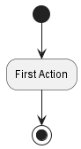 |
Par d√©faut, une fl√®che commence √† partir de la derni√®re activit√© d√©finie. Vous pouvez rajouter un libell√© sur une fl√®che en mettant des crochets [ et ] juste apr√®s la d√©finition de la fl√®che. üéâ Copied!
| @startuml
(*) --> "First Action"
-->[You can put also labels] "Second Action"
--> (*)
@enduml
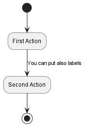 |
Vous pouvez utiliser -> pour les flèches horizontales. Il est aussi possible de forcer la direction d'une flèche en utilisant la syntaxe suivante : -down-> (default arrow)-right-> or ->-left->-up->
üéâ Copied!
| @startuml
(*) -up-> "First Action"
-right-> "Second Action"
--> "Third Action"
-left-> (*)
@enduml
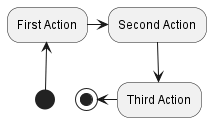 |
Vous pouvez utiliser le mot cl√© if/then/else pour d√©finir une branche. üéâ Copied!
| @startuml
(*) --> "Initialization"
if "Some Test" then
-->[true] "Some Action"
--> "Another Action"
-right-> (*)
else
->[false] "Something else"
-->[Ending process] (*)
endif
@enduml
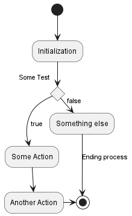 |
Malheureusement, vous devez parfois avoir √† r√©p√©ter la m√™me activit√© dans le diagramme de texte. üéâ Copied!
| @startuml
(*) --> "check input"
If "input is verbose" then
--> [Yes] "turn on verbosity"
--> "run command"
else
--> "run command"
Endif
-->(*)
@enduml
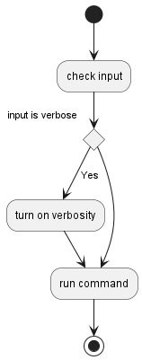 |
Par d√©faut, une branche commence √† la derni√®re activit√© d√©finie, mais il est possible de passer outre et de d√©finir un lien avec le mot cl√© if. Il est aussi possible d'imbriquer les branches. üéâ Copied!
| @startuml
(*) --> if "Some Test" then
-->[true] "activity 1"
if "" then
-> "activity 3" as a3
else
if "Other test" then
-left-> "activity 5"
else
--> "activity 6"
endif
endif
else
->[false] "activity 2"
endif
a3 --> if "last test" then
--> "activity 7"
else
-> "activity 8"
endif
@enduml
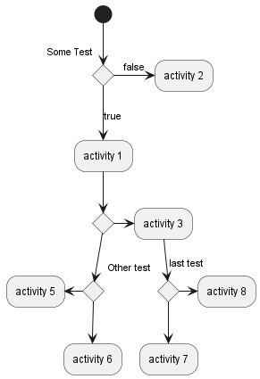 |
Vous pouvez utiliser la syntaxe === code === pour afficher des barres de synchronisation. üéâ Copied!
| @startuml
(*) --> ===B1===
--> "Parallel Activity 1"
--> ===B2===
===B1=== --> "Parallel Activity 2"
--> ===B2===
--> (*)
@enduml
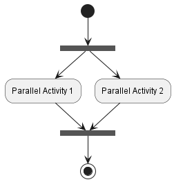 |
Lorsque vous d√©clarez des activit√©s, vous pouvez positionner sur plusieurs lignes le texte de description Vous pouvez √©galement ajouter \n dans la description. Il est √©galement possible d'utiliser quelques tags HTML tels que : Vous pouvez aussi donner un court code √† l'activit√© avec le mot cl√© as. Ce code peut √™tre utilis√© plus tard dans le diagramme de description. üéâ Copied!
| @startuml
(*) -left-> "this <size:20>activity</size>
is <b>very</b> <color:red>long2</color>
and defined on several lines
that contains many <i>text</i>" as A1
-up-> "Another activity\n on several lines"
A1 --> "Short activity <img:sourceforge.jpg>"
@enduml
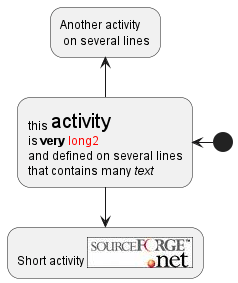 |
Vous pouvez rajouter des notes sur une activit√©s en utilisant les commandes: note left, note right, note top ou note bottom, juste apr√®s la d√©finition de l'activit√© concern√©e. Si vous voulez mettre une note sur le d√©marrage du diagramme, d√©finissez la note au tout d√©but du diagramme. Vous pouvez aussi avoir une note sur plusieurs lignes, en utilisant les mots cl√©s endnote. üéâ Copied!
| @startuml
(*) --> "Some Activity"
note right: This activity has to be defined
"Some Activity" --> (*)
note left
This note is on
several lines
end note
@enduml
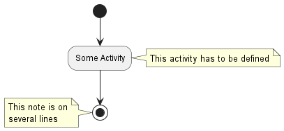 |
Vous pouvez d√©finir une partition en utilisant le mot cl√© partition, et optionnellement d√©clarer un fond de couleur pour votre partition (En utilisant un code couleur html ou un nom) Quand vous d√©clarez les activit√©s, ils sont automatiquement mis dans la derni√®re partition utilis√©e. Vous pouvez fermer la partition de d√©finition en utilisant les crochets fermants }. üéâ Copied!
| @startuml
partition Conductor {
(*) --> "Climbs on Platform"
--> === S1 ===
--> Bows
}
partition Audience #LightSkyBlue {
=== S1 === --> Applauds
}
partition Conductor {
Bows --> === S2 ===
--> WavesArmes
Applauds --> === S2 ===
}
partition Orchestra #CCCCEE {
WavesArmes --> Introduction
--> "Play music"
}
@enduml
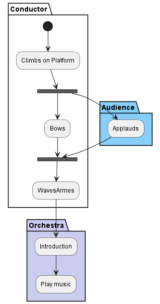 |
Vous pouvez utiliser la commande skinparam pour changer la couleur et la police d'√©criture pour dessiner. Vous pouvez utiliser cette commande : Vous pouvez sp√©cifier une couleur et une police d'√©criture dans les st√©r√©otypes d'activit√©s. üéâ Copied!
| @startuml
skinparam backgroundColor #AAFFFF
skinparam activity {
StartColor red
BarColor SaddleBrown
EndColor Silver
BackgroundColor Peru
BackgroundColor<< Begin >> Olive
BorderColor Peru
FontName Impact
}
(*) --> "Climbs on Platform" << Begin >>
--> === S1 ===
--> Bows
--> === S2 ===
--> WavesArmes
--> (*)
@enduml
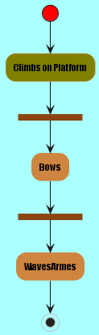 |
Vous pouvez changer la forme des activit√©s en octogone en utilisant la commande skinparam activityShape octagon. üéâ Copied!
| @startuml
'Default is skinparam activityShape roundBox
skinparam activityShape octagon
(*) --> "First Activity"
"First Activity" --> (*)
@enduml
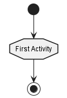 |
üéâ Copied!
| @startuml
title Servlet Container
(*) --> "ClickServlet.handleRequest()"
--> "new Page"
if "Page.onSecurityCheck" then
->[true] "Page.onInit()"
if "isForward?" then
->[no] "Process controls"
if "continue processing?" then
-->[yes] ===RENDERING===
else
-->[no] ===REDIRECT_CHECK===
endif
else
-->[yes] ===RENDERING===
endif
if "is Post?" then
-->[yes] "Page.onPost()"
--> "Page.onRender()" as render
--> ===REDIRECT_CHECK===
else
-->[no] "Page.onGet()"
--> render
endif
else
-->[false] ===REDIRECT_CHECK===
endif
if "Do redirect?" then
->[yes] "redirect request"
--> ==BEFORE_DESTROY===
else
if "Do Forward?" then
-left->[yes] "Forward request"
--> ==BEFORE_DESTROY===
else
-right->[no] "Render page template"
--> ==BEFORE_DESTROY===
endif
endif
--> "Page.onDestroy()"
-->(*)
@enduml
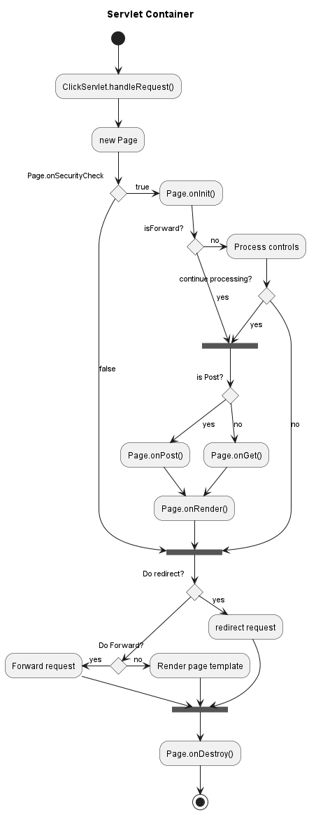 |
| |